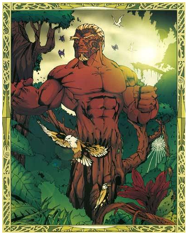

TAWHIRIMĀTEA – THE GOD OF WIND AND WEATHER

Tāwhirimatea is the God of Wind and the Weather. Tāwhirimatea was against the separation of his parents, and to this day stays close to his father.
TĀNE MĀHUTA – THE GOD OF THE FOREST
Tāne Māhuta, the God of the Forest, is also the father and God of all who dwell in the forests (insects, animals, and especially the birds). It was Tāne Māhuta who had the strength to separate his parents by laying flat on his back and pushing up with his legs.
TŪMĀTAUENGA – THE GOD OF WAR AND PEOPLE

Tūmatauenga, or Tū, is our God of War, and also the God of People. After the separation of their parents, Tāwhirimātea waged war on his brothers. He subdued a number of them, but Tūmatauenga proved his equal. From that time on there has been an ongoing battle between the weather (Tāwhirimātea) and people (Tūmatauenga).
TANGAROA – THE GOD OF THE SEA

Tangaroa is the God of the Sea and all those who live in the ocea. Māori believe that water is an energy, with many moods. It can be calm and life-giving, or dangerous and destructive. This energy is called Tangaroa. One tikanga speaks of never turning your back on Tangaroa when by the seaside, as this is disrespectful of his mana.
RONGOMATĀNE – THE GOD OF KUMARA AND CULTIVATED FOOD

Rongomatāne is the God of Cultivtated food, and the kumara. When Tāwhirimātea was venting his anger on his brothers, both Rongo and Haumiatiketike, took refuge in the body of Papa, mother earth, who hid them until the storm passed. In the Māori language, ‘rongo’ means peace. Rongo is generally portrayed as the creator of the kūmara, a plant associated with peace.
HAUMIATIKETIKE – THE GOD OF UNCULTIVATED FOO

Haumiatiketike is our God of Uncultivated food. Haumia agreed to the forced separation of his parents. Because of this he was subjected to the fury of his brother Tāwhirimātea, who would have killed him if their mother had not hidden him in her body, that is, in the ground. While he escaped from Tāwhirimātea, he was later discovered by Tū, god of war (here representing humankind), who saw Haumia's hair sticking up out of the earth. Haumia contrasts with his brother Rongo, the god of the kūmara and all cultivated plants.
RŪAUMOKO – THE GOD OF EARTHQUAKES, VOLCANOES AND SEASONS

Rūaumoko is the god of earthquakes, volcanoes and seasons He is the youngest son of Ranginui and Papatūānuku. After Rangi and Papa were separated by their sons, Rangi cried, and his tears flooded the land. To stop this, the sons decided to turn Papa face down, so Rangi and Papa could no longer see each other's sorrow. Rūaumoko was at his mother's breast when this happened, so he was carried into the world below. He was given fire for warmth by Tama-kaka, and his movements below the earth cause earthquakes and volcanoes.